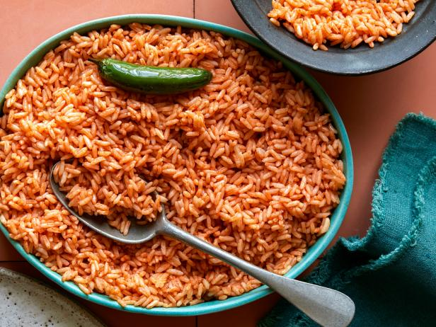
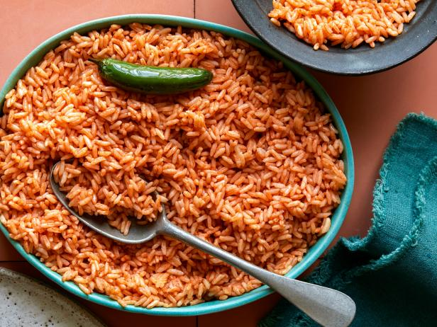

Red Rice
 

Description
Red Rice recipe that will add vibrancy to your table. This dish is a celebration of aromatic spices,
tender grains, and a burst of colors that will captivate both your eyes and taste buds.
Join us as we embark on a culinary journey to create a tantalizing bowl of Red Rice that is as visually stunning as it is delicious.
Ingredients
- 1 cup long-grain rice (such as basmati)
- 1 tablespoon vegetable oil
- 1 small onion, finely chopped
- 2 cloves of garlic, minced
- 1 red bell pepper, finely diced
- 1 teaspoon ground cumin
- 1 teaspoon paprika
- 1/2 teaspoon turmeric
- 1/4 teaspoon cayenne pepper (optional, for heat)
- 2 cups vegetable broth
- Salt, to taste
- Fresh cilantro leaves, for garnish (optional)
- Sliced green onions, for garnish (optional)
- Lemon wedges, for serving (optional)
- Rinse the rice:
- Sauté the aromatics:
- Add the spices:
- Cook the rice:
- Fluff and garnish:
- and enjoy:
Place the rice in a fine-mesh sieve and rinse it under cold water until the water runs clear. This helps remove excess starch and ensures fluffy grains.
Heat the vegetable oil in a large saucepan over medium heat. Add the chopped onion, minced garlic, and diced red bell pepper. Sauté until the onion becomes translucent and the vegetables soften, approximately 5 minutes.
Sprinkle the ground cumin, paprika, turmeric, and cayenne pepper (if desired) over the sautéed vegetables. Stir well to coat the vegetables evenly with the aromatic spices. Allow the spices to toast for a minute to release their flavors.
Add the rinsed rice to the saucepan, stirring it with the spiced vegetables to coat the grains. Pour in the vegetable broth and add salt to taste. Bring the mixture to a boil, then reduce the heat to low, cover the saucepan with a tight-fitting lid, and let it simmer for 15-20 minutes or until the rice is tender and has absorbed the liquid.
Once the rice is cooked, remove the saucepan from the heat and let it sit, covered, for 5 minutes. Then, use a fork to fluff the rice gently, separating the grains. If desired, garnish with fresh cilantro leaves and sliced green onions for added freshness and visual appeal.
Transfer the Red Rice to a serving dish and accompany it with lemon wedges on the side. The bright citrusy notes of the lemon can be squeezed over the rice before eating, adding a refreshing tang. This vibrant and flavorful Red Rice is a delightful side dish that pairs well with a variety of main courses or can be enjoyed on its own.